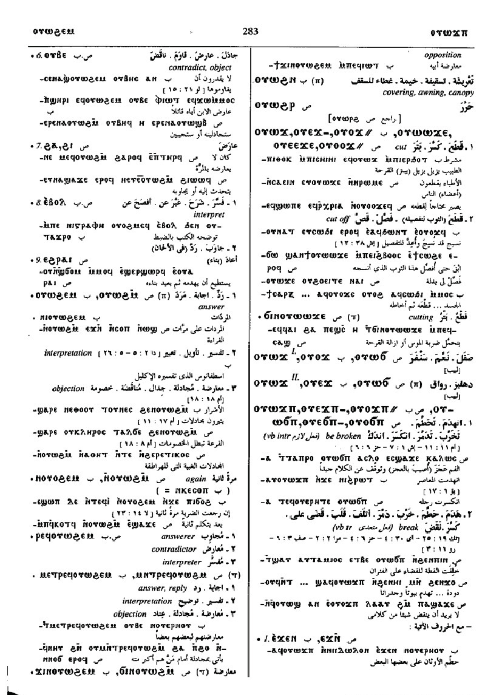
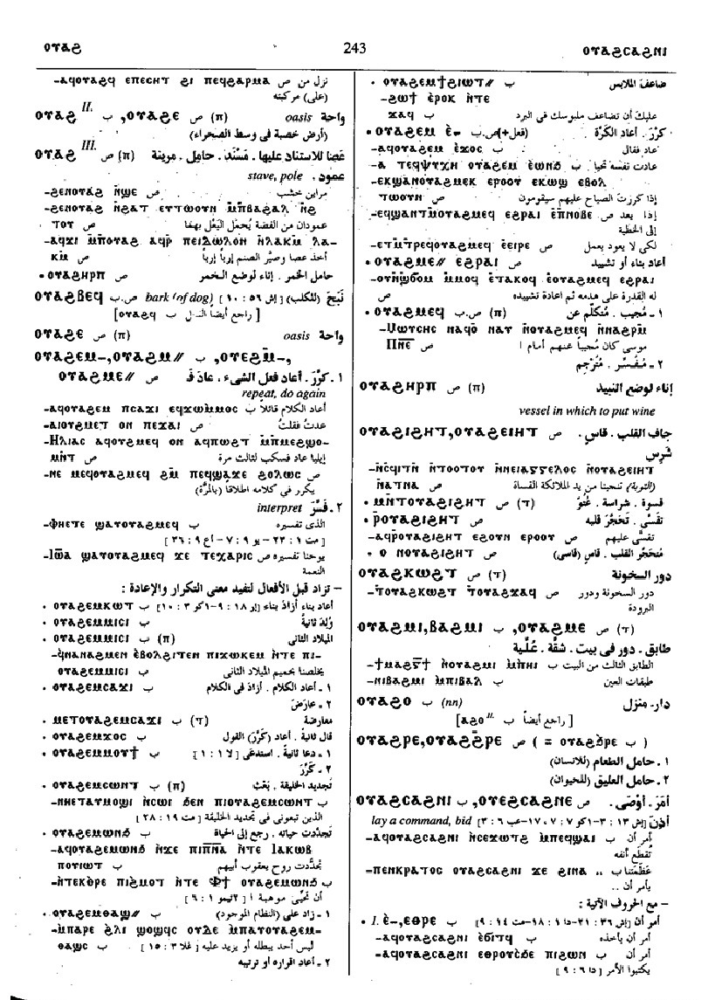

(verb)
intr: repeat, answer [αντιλεγειν,
αποκρινεσθαι, απολογεισθαι]
tr: repeat, do again, add [δευτερουν, διπλασιαζειν]
tr: repeat, do again, add [δευτερουν, διπλασιαζειν]


(S, sA, F)
ⲟⲩⲱϩⲙ
(A, sA) ⲟⲩⲱϩⲙⲉ
(B, F) ⲟⲩⲱϩⲉⲙ
(B) ⲃⲱϩⲉⲙ, ⲟⲩⲟϩⲉⲙ
(NH) ⲟⲩϩⲱⲙ(nn) {ext codex II - The Hypostasis of the Archons; 109; 95; 7; ⲕⲣⲡⲗⲁⲛⲁ ⲥⲁⲕⲗⲁ ⲉⲧⲉ ⲡⲉϥⲟⲩϩⲱⲙ ⲡⲉ ⲓⲁⲗⲧⲁⲃⲁⲱⲑ; Ext}
(S) ⲟⲩⲉϩⲙ-
(A) ⲟⲩⲁϩⲙⲉ-
(Sa) ⲟⲩⲉϩⲙⲉ-
(B) ⲟⲩⲁϩⲉⲙ-
(S, B) ⲟⲩⲟϩⲉⲙ-
(S, B, F) ⲟⲩⲉϩⲉⲙ-
(S, sA, B, F) ⲟⲩⲁϩⲙ=
(S) ⲟⲩⲟϩⲙ=
(F) ⲟⲩⲉϩⲙ=
(S, F) ⲟⲩⲟϩⲙ+
(Sf) ⲟⲩⲁϩⲙ+
(B) ⲟⲩⲟϩⲉⲙ+
(B) p c ⲟⲩⲁϩⲉⲙ-
(A, sA) ⲟⲩⲱϩⲙⲉ
(B, F) ⲟⲩⲱϩⲉⲙ
(B) ⲃⲱϩⲉⲙ, ⲟⲩⲟϩⲉⲙ
(NH) ⲟⲩϩⲱⲙ(nn) {ext codex II - The Hypostasis of the Archons; 109; 95; 7; ⲕⲣⲡⲗⲁⲛⲁ ⲥⲁⲕⲗⲁ ⲉⲧⲉ ⲡⲉϥⲟⲩϩⲱⲙ ⲡⲉ ⲓⲁⲗⲧⲁⲃⲁⲱⲑ; Ext}
(S) ⲟⲩⲉϩⲙ-
(A) ⲟⲩⲁϩⲙⲉ-
(Sa) ⲟⲩⲉϩⲙⲉ-
(B) ⲟⲩⲁϩⲉⲙ-
(S, B) ⲟⲩⲟϩⲉⲙ-
(S, B, F) ⲟⲩⲉϩⲉⲙ-
(S, sA, B, F) ⲟⲩⲁϩⲙ=
(S) ⲟⲩⲟϩⲙ=
(F) ⲟⲩⲉϩⲙ=
(S, F) ⲟⲩⲟϩⲙ+
(Sf) ⲟⲩⲁϩⲙ+
(B) ⲟⲩⲟϩⲉⲙ+
(B) p c ⲟⲩⲁϩⲉⲙ-
| With following preposition:5015 | Crum: 509b | ||||||||
| (S, B) ― ⲉ- | reply to
― intr: ― tr: do again, repeat S5016 |
||||||||
| (S, B) ― ⲉϫⲛ- | reply to5017 | ||||||||
| (S, B, F) ― ⲛ- {dat} | 5018 | Crum: 510a | |||||||
| (S, B) ― ⲛⲥⲁ- | respond to5019 | ||||||||
| (S, B) ― ⲛⲁϩⲣⲛ- | in presence of5020 | ||||||||
| (S, B, F) ― ⲟⲩⲃⲉ- | contradict, adject [αντειπειν, αντιλεγειν]5021 | ||||||||
| (S, A) ― ϩⲁ- | as last5022 | ||||||||
| (S) ― ϩⲓ- | as last5023 | ||||||||
| With following adverb:7032 | |||||||||
| (B) ⲉⲃⲟⲗ (c) | interpret7033 | ||||||||
| (S) ⲉϩⲣⲁⲓ (c) | bring up again, reconstruct7034 | ||||||||
| (S, A, sA, B) ― (ⲡ) | (noun male)
answer, objection, interpretation [αντιλογια, αντιθεσισ, συγκρισισ]2726 |
||||||||
| (S, A, B, F) ⲛⲟⲩ. | adverbial, again [ετι, παλιν]2727 | Crum: 510b | |||||||
| (B) ⲁⲧⲃⲱ. | without response2728 | ||||||||
| (S) ⲣⲉϥⲟⲩ. | answerer, contradictor2729 | ||||||||
| ⲙⲛⲧⲣ. | opposition, disobedience2730 | ||||||||
| (S, B) ϭⲓⲛⲟⲩ., ϫⲓⲛⲟⲩ. | opposition2731 | ||||||||
| (S) ⲟⲩⲁϩⲙⲉϥ | answerer, interpreter2732 | ||||||||
| (S)
ⲟⲩⲁϩⲙⲉ
(B) ⲟⲩⲁϩⲙⲓ, ⲃⲁϩⲙⲓ |
what is added, storey of house2733 | ||||||||
See also:
- 2104 (S) ϩⲏ, ϩⲉ (B) ϧⲉ
Crum: 509,510

509

510
Dawoud: 282a-283a,
243b

282

283

243